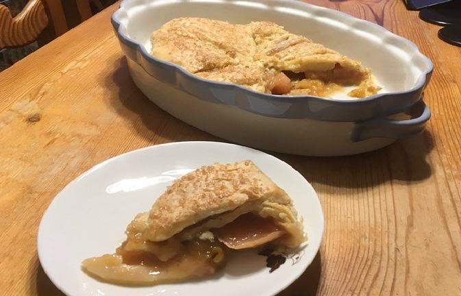

Easy Fruit Pie
Ingredients:
-
Ready Puff Pastry (or you can make your own)
-
2-3 tbsp of Brown Sugar
-
500-600g of any Stoned Fruits (peaches, plums,etc)
-
1 tbsp of Cornstarch
-
To Decorate: 1 tsp of Granulated Sugar
-
Optional: Cinnamon

Method:
-
Unstone and cut the fruit into medium sized pieces.
-
Put the fruit into a pot on the stove and add the sugar with the fruit.
-
Add 2-3 tbsp of water to the pot as well.
-
Let the mixture simmer on the stove on medium heat for 7-9 minutes until soft.
-
Take out the fruit but leave the juice and put aside.
-
Dissolve the cornastarch in water to make a slurry liquid.
-
Add the liquid to the juices in the pot and mix it together and let it simmer for 2 minutes but make
sure it doesn't boil.
-
Pour the juice onto the fruit and let cool for about an hour.
-
Take out the dough from the fridge and let it get to room temperature.
-
Preheat the oven and spread the douhg onto a baking dish.
-
Spoon the mixture into the centre of the dough and fold the dough over it to close like a parcel.
-
Sprinkle the parcel with granulated sugar and make small holes in the pie to let air out and place
in the oven for 45 minutes.